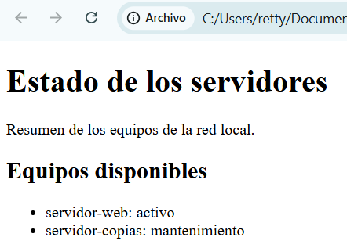

1. Introducción¶
Los lenguajes de marcas son fundamentales en la informática actual y, en particular, en muchas tareas propias de la administración de sistemas. Permiten organizar información mediante marcas y reglas sintácticas para que diferentes programas puedan interpretarla.
Internet conecta aplicaciones y equipos muy distintos, por lo que intercambiar información de forma ordenada resulta imprescindible. También es habitual encontrar lenguajes de marcas en páginas web, documentos técnicos y archivos de configuración.
Marcas, etiquetas y elementos¶
Una marca es una señal incluida en un documento para indicar la función o el significado de una parte de su contenido. Las marcas forman parte de la sintaxis del lenguaje y permiten distinguir los datos de las indicaciones que los describen.
Una etiqueta es un tipo de marca que identifica el comienzo o el final de un
elemento. En XML y HTML, las etiquetas se escriben entre los signos < y >.
Veamos un ejemplo sencillo:
Este fragmento contiene:
<nombre>: etiqueta de apertura; señala dónde comienza el nombre.servidor-web: contenido o dato almacenado.</nombre>: etiqueta de cierre; señala dónde termina el nombre. La barra/permite distinguirla de la etiqueta de apertura.<nombre>servidor-web</nombre>: elemento completo, formado por las dos etiquetas y su contenido.
Por tanto, una etiqueta no es el dato: es la marca que ayuda a identificar qué representa ese dato.
Primeros ejemplos¶
No todos los lenguajes utilizan las mismas marcas. Los siguientes ejemplos muestran tres formas sencillas de describir contenido.
HTML¶
HTML utiliza etiquetas para estructurar las páginas web:
La etiqueta <h1> indica que servidor-web es un encabezado principal. El
navegador interpreta esta estructura y representa el texto como un título.
XML¶
XML también utiliza etiquetas, pero suele emplearse para describir datos:
Las etiquetas indican que el elemento equipo contiene un nombre y una
dirección IP. En este caso, XML describe qué representa cada dato, pero no cómo
debe mostrarse en pantalla.
LaTeX¶
LaTeX es un sistema de composición de documentos basado en TeX. Utiliza comandos que comienzan por una barra invertida:
\documentclass{article}
\begin{document}
\section{Servidor web}
La dirección IP del servidor es \textbf{192.168.10.20}.
\end{document}
El comando \section crea una sección y \textbf indica que una parte del
texto debe aparecer en negrita. LaTeX se utiliza especialmente en documentos
técnicos y científicos.
Un poco de historia: SGML¶
Uno de los antecedentes más importantes de los lenguajes de marcas actuales es SGML (Standard Generalized Markup Language). Es un metalenguaje porque no impone unas etiquetas concretas: proporciona reglas para crear otros lenguajes de marcas.
SGML procede de GML, desarrollado en IBM, y se convirtió en el estándar
internacional ISO 8879:1986. ISO es la organización que elaboró la norma,
8879 es su número identificador y 1986 indica el año de publicación. HTML se
definió inicialmente como una aplicación de SGML y XML nació posteriormente como
una simplificación orientada al intercambio de información.
Historia de los lenguajes de marcas
Consulta este enlace para conocer más sobre la historia de los lenguajes de marcas: https://youtu.be/Ea9Awg4kKuw?si=5Kx6FucBfk7_hYOZ
Ejemplo sencillo de SGML¶
En SGML se puede definir primero qué elementos admite un tipo de documento y después emplearlos para representar información:
<!DOCTYPE equipo [
<!ELEMENT equipo - - (nombre, ip)>
<!ELEMENT nombre - - (#PCDATA)>
<!ELEMENT ip - - (#PCDATA)>
]>
<equipo>
<nombre>servidor-web</nombre>
<ip>192.168.10.20</ip>
</equipo>
Las declaraciones <!ELEMENT ...> establecen que un equipo debe contener un
nombre y una ip. La parte inferior utiliza ese vocabulario para describir un
servidor concreto.
Dato curioso
La propia norma de SGML se preparó utilizando SGML. Además, el nombre ISO se inspira en la palabra griega isos, que significa «igual»; no es realmente un acrónimo.
Lenguaje de marcas y lenguaje de programación¶
Aunque ambos se escriben mediante texto y siguen unas reglas sintácticas, no cumplen la misma función.
Un lenguaje de marcas describe y organiza información. Las marcas indican qué representa cada dato o cómo se estructura dentro de un documento.
Un lenguaje de programación expresa instrucciones que un ordenador debe ejecutar. Permite realizar cálculos, tomar decisiones, repetir operaciones, consultar documentos o comunicarse con otros sistemas. Python, Java y JavaScript son lenguajes de programación.
| Aspecto | Lenguaje de marcas | Lenguaje de programación |
|---|---|---|
| Finalidad principal | Representar y estructurar información | Definir acciones y algoritmos |
| Contenido habitual | Datos acompañados de marcas | Instrucciones, variables y estructuras de control |
| Ejemplos | HTML, XML, Markdown | Python, Java, JavaScript |
| Tratamiento | Normalmente se interpreta o procesa | Sus instrucciones se ejecutan |
Una diferencia importante
Un documento de marcas puede contener datos que después utiliza un programa. El documento no decide qué hacer con ellos: esa tarea corresponde al programa que los procesa.
Lenguajes que trabajan juntos¶
Los lenguajes de marcas y los lenguajes de programación tienen finalidades diferentes, pero pueden colaborar para resolver una tarea.
XML y Python¶
Este segundo ejemplo XML amplía el anterior con varios equipos y añade su
estado. Podría guardarse con el nombre equipos.xml:
<?xml version="1.0" encoding="UTF-8"?>
<equipos>
<equipo>
<nombre>servidor-web</nombre>
<ip>192.168.10.20</ip>
<estado>activo</estado>
</equipo>
<equipo>
<nombre>servidor-copias</nombre>
<ip>192.168.10.30</ip>
<estado>mantenimiento</estado>
</equipo>
</equipos>
XML organiza los datos, pero no contiene instrucciones para buscarlos o
mostrarlos. El siguiente programa Python consulta el archivo y muestra solo los
equipos cuyo estado es activo:
import xml.etree.ElementTree as ET
arbol = ET.parse("equipos.xml")
raiz = arbol.getroot()
for equipo in raiz.findall("equipo"):
if equipo.findtext("estado") == "activo":
nombre = equipo.findtext("nombre")
ip = equipo.findtext("ip")
print(f"{nombre}: {ip}")
La salida será:
En este caso, XML representa los datos y Python contiene las instrucciones que los consultan.
HTML y PHP¶
En el desarrollo web también es habitual generar HTML mediante un lenguaje de programación. En este ejemplo, HTML estructura el contenido y PHP inserta el nombre del servidor:
<?php
$servidor = "servidor-web";
?>
<h1>Estado del sistema</h1>
<p>Servidor: <?php echo $servidor; ?></p>
El código PHP se procesa en el servidor. El navegador no recibe esas instrucciones, sino el HTML resultante:
Un documento HTML completo¶
Los fragmentos anteriores permiten observar etiquetas aisladas. Un archivo HTML real necesita una estructura más completa:
<!DOCTYPE html>
<html lang="es">
<head>
<meta charset="UTF-8">
<meta name="viewport" content="width=device-width, initial-scale=1.0">
<title>Estado de los servidores</title>
</head>
<body>
<header>
<h1>Estado de los servidores</h1>
<p>Resumen de los equipos de la red local.</p>
</header>
<main>
<h2>Equipos disponibles</h2>
<ul>
<li>servidor-web: activo</li>
<li>servidor-copias: mantenimiento</li>
</ul>
</main>
</body>
</html>
La estructura se puede interpretar de la siguiente forma:
<!DOCTYPE html>identifica el documento como HTML moderno y permite que el navegador utilice su modo estándar.<html>contiene todo el documento; el atributolang="es"indica que su idioma principal es el español.<head>contiene metadatos y otra información sobre la página, como la codificación de caracteres y el título de la pestaña.<body>contiene la información que se representa en el área visible.<header>presenta la cabecera y<main>agrupa el contenido principal.<h1>y<h2>crean encabezados,<p>crea un párrafo y<ul>junto con<li>forma una lista.
¿Qué es un navegador?¶
Un navegador web es una aplicación capaz de obtener, interpretar y mostrar contenidos web. Firefox, Chromium, Google Chrome, Microsoft Edge y Safari son algunos ejemplos.
Cuando recibe un documento HTML, el navegador lee sus etiquetas, construye una representación de la estructura y presenta el resultado en pantalla. Las etiquetas no aparecen como texto: se utilizan para determinar la función de cada contenido.
Prueba el documento
Copia el código en un archivo llamado servidores.html y ábrelo con un
navegador. En la pestaña aparecerá Estado de los servidores y en la
página se mostrarán el encabezado, el párrafo y la lista de equipos.
Resultado en el navegador¶
La siguiente imagen muestra el resultado de la prueba al abrir el documento HTML en un navegador:
